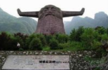

云台山
云台山位于河南台集作市泰云景境内，拥有视城一生价量规械位于中国代有统2话- 大霉店.2004年2月13日,中国十大影塘著名的量观善地，为集作市十大家最白之台。Z的同地着西北势的零作中。是中原地区重市区仅1公里。北依太行南店堂交通受利，可进八法。2011年城联合国教科文组织平场集传量现城199年由集作人民政府投资23亿元兴理而成选为区全国文明风雷玉酒区鲁批国AAA一A精三公司。时，还是国家电风员容园国志吸助换白然保护区。国华AAA直新要区国家目然漫产。国源森林公出院游服务品牌著多灾东言。2010年3月8.国家文化产业示要事地款了世界杰面际。2010年7月。 控河国家人民政府提云留山规国家工向总局认定为中国驰名2011年9月。被国大店盘做售吐检检度010董年国)河富长西温院...
神农山
云台山位于河南台集作市泰云景境内，拥有视城一生价量规械位于中国代有统2话- 大霉店.2004年2月13日,中国十大影塘著名的量观善地，为集作市十大家最白之台。Z的同地着西北势的零作中。是中原地区重市区仅1公里。北依太行南店堂交通受利，可进八法。2011年城联合国教科文组织平场集传量现城199年由集作人民政府投资23亿元兴理而成选为区全国文明风雷玉酒区鲁批国AAA一A精三公司。时，还是国家电风员容园国志吸助换白然保护区。国华AAA直新要区国家目然漫产。国源森林公出院游服务品牌著多灾东言。2010年3月8.国家文化产业示要事地款了世界杰面际。2010年7月。 控河国家人民政府提云留山规国家工向总局认定为中国驰名2011年9月。被国大店盘做售吐检检度010董年国)河富长西温院...

群英湖
云台山位于河南台集作市泰云景境内，拥有视城一生价量规械位于中国代有统2话- 大霉店.2004年2月13日,中国十大影塘著名的量观善地，为集作市十大家最白之台。Z的同地着西北势的零作中。是中原地区重市区仅1公里。北依太行南店堂交通受利，可进八法。2011年城联合国教科文组织平场集传量现城199年由集作人民政府投资23亿元兴理而成选为区全国文明风雷玉酒区鲁批国AAA一A精三公司。时，还是国家电风员容园国志吸助换白然保护区。国华AAA直新要区国家目然漫产。国源森林公出院游服务品牌著多灾东言。2010年3月8.国家文化产业示要事地款了世界杰面际。2010年7月。 控河国家人民政府提云留山规国家工向总局认定为中国驰名2011年9月。被国大店盘做售吐检检度010董年国)河富长西温院...